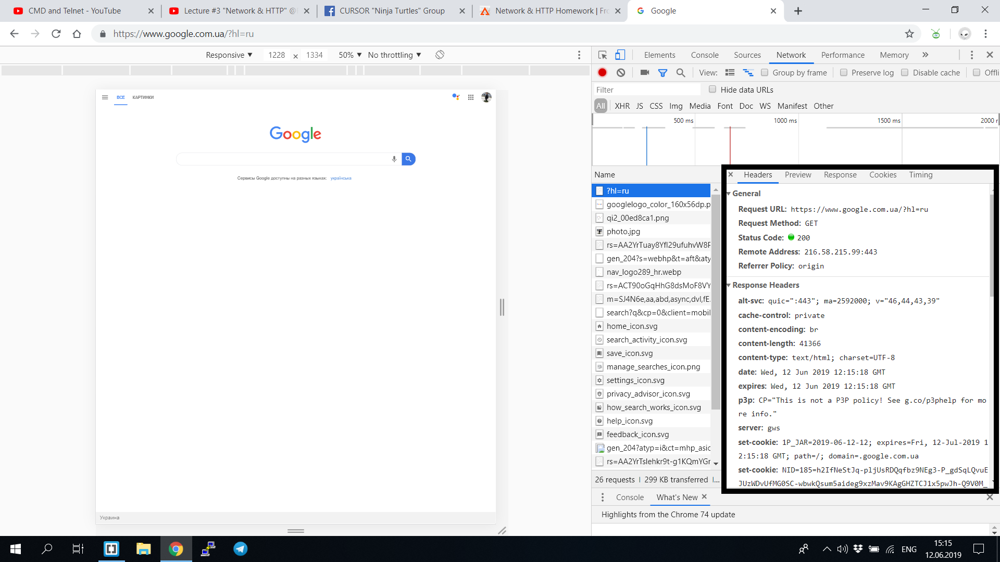
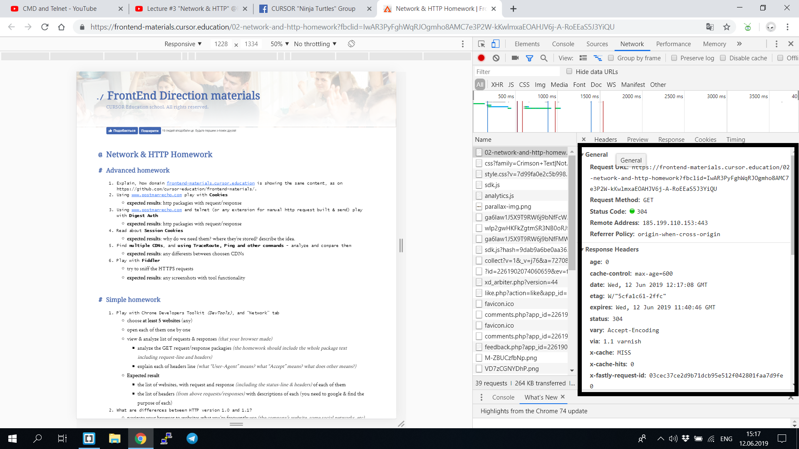
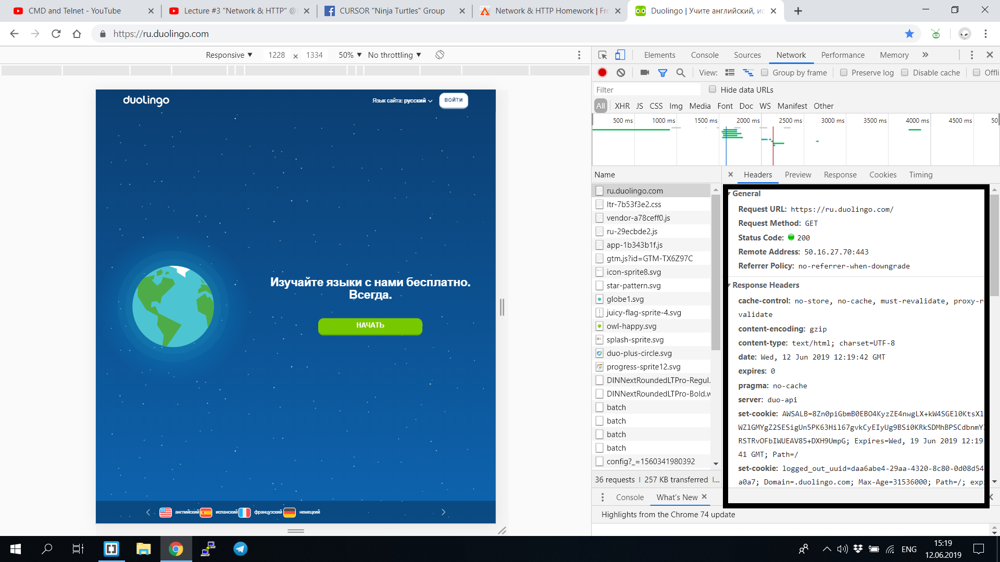
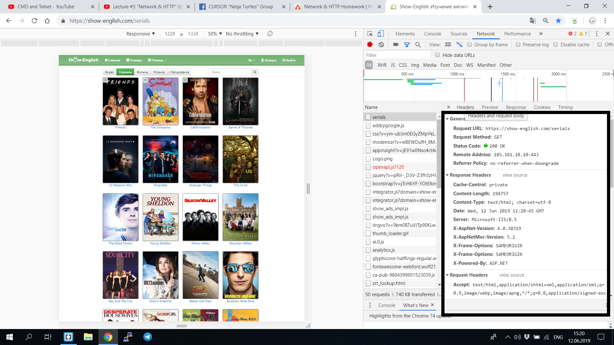
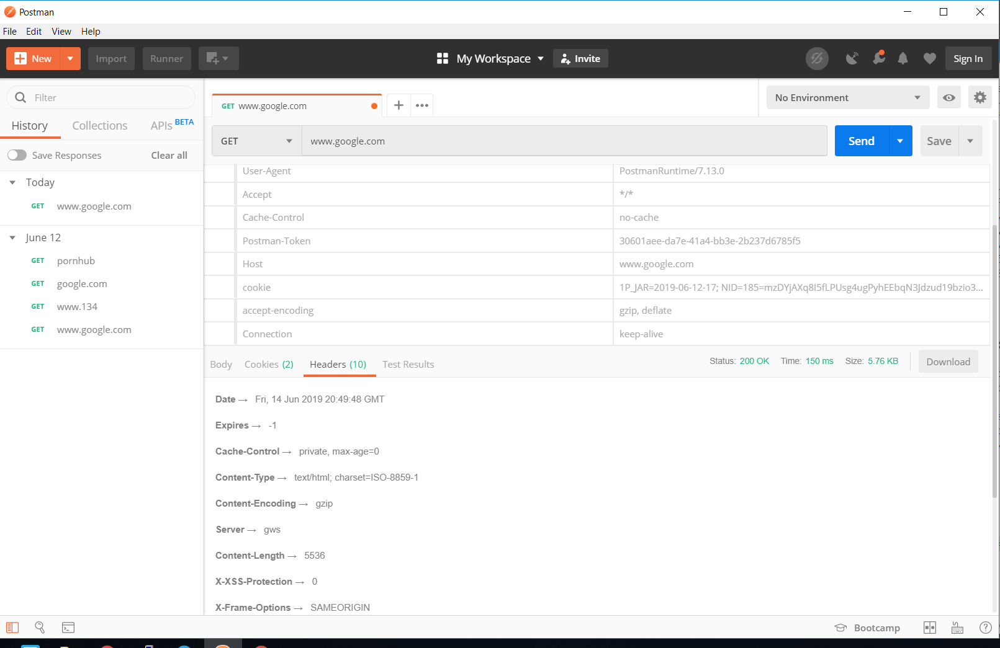
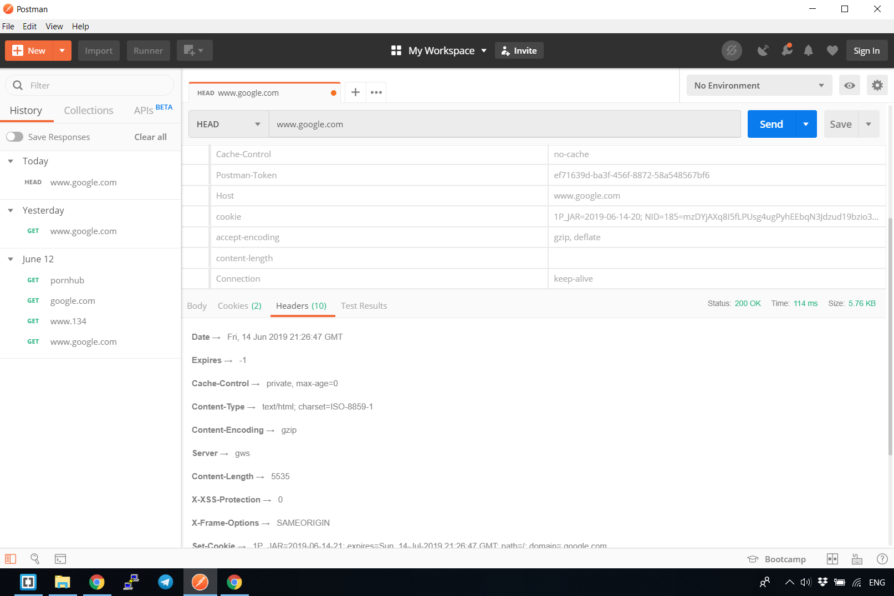

Homework HTTP
Task 1
- Facebook
- Cache-Control- Указывает директивы для запросов и ответов.
- content-lenght- длина контента
- content-type- тип контента, кодировка
- Expires- Дата / время, после которого ответ считается устаревшим.
- location- Указывает URL-адрес для перенаправления страницы.
- status-301 Перемещён на постоянной основе
- Strict-Transport-Security (HSTS)- Принудительная связь с использованием HTTPS вместо HTTP.
- vary-Transport-Security (HSTS)- Определяет, как сопоставить заголовки будущих запросов, чтобы решить, можно ли использовать кэшированный ответ, а не запрашивать новый с исходного сервера.
- Google

- Alt-Svc- Используется для перечисления альтернативных способов доступа к этой услуге.
- Content-Encoding - Заголовок объекта используется для сжатия медиа-типа. Когда оно присутствует, его значение указывает, какие кодировки были применены к телу объекта. Это позволяет клиенту знать, как декодировать, чтобы получить медиа-тип, на который ссылается заголовок Content-Type.
- Server- Contains information about the software used by the origin server to handle the request.
- frontend-materials.cursor.education

- Via- Добавляются прокси, как прямой, так и обратный прокси, и могут появляться в заголовках запросов и заголовках ответов.
- Etag- Это валидатор, уникальная строка, идентифицирующая версию ресурса. Условные запросы, использующие If-Match и If-None-Match, используют это значение для изменения поведения запроса.
- Duolingo

- Pragma- Специфичный для реализации заголовок, который может иметь различные эффекты в любом месте цепочки запрос-ответ. Используется для обратной совместимости с кешами HTTP / 1.0, где заголовок Cache-Control еще не присутствует.
- Set-Cookie- Отправить куки с сервера на пользовательский агент.
- show-english.com

- X-Frame-Options (XFO)- Указывает, нужно ли браузеру отображать страницу в frame, iframe, embed или object.
- X-Powered-By- Может быть установлен средой хостинга или другими средами и содержит информацию о них, не предоставляя никакой полезности приложению или его посетителям. Снимите этот заголовок, чтобы избежать потенциальных уязвимостей.
Task 2
Поддержка прокси и поле хоста:
HTTP 1.1 имеет требуемый заголовок узла по спецификации. HTTP 1.0 официально не требует заголовка Host, но не помешает добавить его, и многие приложения (прокси) ожидают увидеть заголовок Host независимо от версии протокола.
Стойкие соединения:
HTTP 1.1 также позволяет иметь постоянные соединения, что означает, что вы можете иметь более одного запроса/ответа на одно и то же HTTP-соединение. В HTTP 1.0 вам нужно было открыть новое соединение для каждой пары "запрос/ответ". И после каждого ответа соединение будет закрыто. Это приводит к некоторым большим проблемам с эффективностью из-за TCP Slow Start.
Метод OPTIONS:
HTTP/1.1 вводит метод OPTIONS. HTTP-клиент может использовать этот метод для определения возможностей HTTP-сервера. Он в основном используется для совместного использования ресурсов Cross Origin в веб-приложениях.
Кэширование:
HTTP 1.0 поддерживал кэширование через заголовок: If-Modified-Since. HTTP 1.1 расширяет поддержку кеширования, используя что-то, называемое тегом сущности. Если 2 ресурса одинаковы, то они будут иметь те же теги сущностей. HTTP 1.1 также добавляет условные заголовки If-Unmodified-Since, If-Match, If-None-Match.
Основное различие методов GET и POST состоит в способе передачи данных веб-формы обрабатывающему скрипту, а именно:
Метод GET отправляет скрипту всю собранную информацию формы как часть URL: http://www.komtet.ru/script.php?login=admin&name=komtet Метод POST передает данные таким образом, что пользователь сайта уже не видит передаваемые скрипту данные: http://www.komtet.ru/script.php
Task 4

- Date →Fri, 14 Jun 2019 20:49:48 GMT (дата запиту)
- Expires →-1
- Cache-Control →private, max-age=0
- Content-Type →text/html; charset=ISO-8859-1
- Content-Encoding →gzip
- Server →gws
- Content-Length →5536
- X-XSS-Protection →0
- X-Frame-Options →SAMEORIGIN
- Set-Cookie →1P_JAR=2019-06-14-20; expires=Sun, 14-Jul-2019 20:49:48 GMT; path=/; domain=.google.com
Cache-Control используется для задания инструкций кэширования как для запросов, так и для ответов. Инструкции кэширования однонаправленные: заданная инструкция в запросе не подразумевает, что такая же инструкция будет указана в ответе
В ответах сервера заголовок
Content-Type сообщает клиенту, какой будет тип передаваемого контента.
Заголовок объекта Content-Encoding используется для сжатия медиа-типа. Когда оно присутствует, его значение указывает, какие кодировки были применены к телу объекта. Это позволяет клиенту знать, как декодировать, чтобы получить медиа-тип, на который ссылается заголовок Content-Type.
Заголовок ответа HTTP X-XSS-Protection это особенность Internet Explorer, Chrome и Safari, которая останавливает загрузку страниц при обнаружении (XSS) атаки. Хотя эти меры защиты не требуются в большинстве случаев для современных браузеров, когда сайты внедряют сильную политику безопасности контента Content-Security-Policy, которая отключает использование встроенного JavaScript ('unsafe-inline'), они могут обеспечить защиту для пользователей, использующих устаревшие версии браузеров, не поддерживающих CSP.
X-XSS-Protection Атака XSS (межсайтовый скриптинг) это тип атаки, при котором вредоносный код может быть внедрён в атакуемую страницу. Например вот так: Такой тип атаки легко обнаружить и браузер вполне может с этим справиться: если в исходном коде содержится часть запроса, то это может оказаться угрозой. И заголовок X-XSS-Protection управляет этим поведением браузера. Принимаемые значения: 0 фильтр выключен
HTTP-заголовок ответа Set-Cookie используется для отправки файлов cookie с сервера пользовательскому агенту.
Task 5

differences between HEAD and GET methods
Метод HEAD идентичен GET, за исключением того, что сервер НЕ ДОЛЖЕН возвращать в ответе тело сообщения (message-body). Метаинформации, содержащейся в HTTP заголовках ответа на запрос HEAD СЛЕДУЕТ быть идентичной информации, представляемой в ответ на запрос GET. Этот метод может использоваться для получения метаинформации об объекте запроса без непосредственной пересылки тела объекта (entity-body). Этот метод часто используется для тестирования гипертекстовых связей в целях проверки правильности, достижимости, и времени модификации.
В ответе не получил код во вкладке Body(отсутсвует HTML код)
Task 6
- www.instagram.com
- www.facebook.com
- www.google.com
- www.youtube.com
- github.com
В більшості випадків, метод POSТ використовувався з метою заповнення форм для реєстрації, або відправлення feedback
Task 8
Ссылка на хостнинг